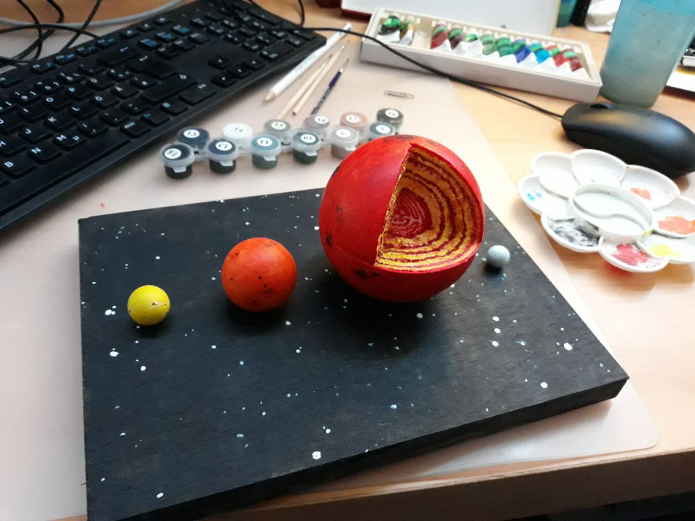

Pictures
Ghostly Aurora in Iceland

Less-ghostly Aurora in Iceland 2022

Comet C/2022 E3 (ZTF) captured in Graz (the fuzzy green light source)
 captured in Graz")
M27 Dumbbell Nebula (captured with my Skywatcher N 200 / 1000)

M20 Trifid Nebula (captured with my Skywatcher N 200 / 1000)

Pantings, drawings & other artsy stuff:
3D printed Jebediah Kerman ready to goStellar evolution & Red Giant Asteroseismology in viewable scale 
Acrylic paintings: M-dwarf flare & CME (topic of my Master's thesis) and artsy planetary view

Space Sloth always fulfills its task... eventually